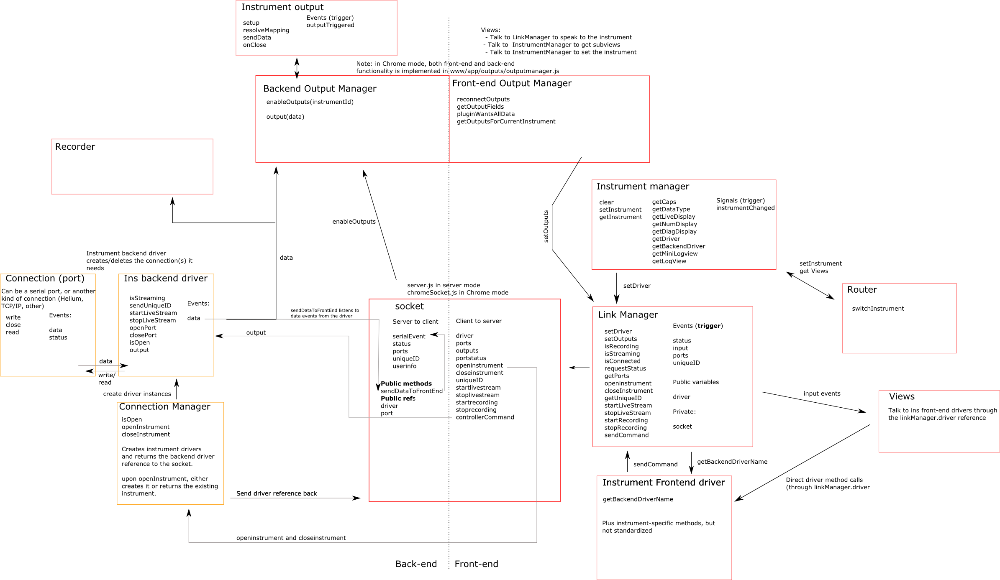

Developer documentation
Building Wizkers
Refer to the build instructions to do a check out and initial build of the code.
Wizkers architecture
Due to its multiple supported run modes, the structure of Wizkers is split between a “front-end” and a “back-end” part, even when it runs 100% in a browser.
The diagram below shows how the the various components of Wizkers interact with each other. If you want to add new instruments, this will be a good reference, though you will usually not need to go deep into those modules, and only implement instrument views and the instruments’s front-end/back-end API.

Source tree organization
The Wizkers source tree is organized as follows:
README.md # Top level Readme, for the benefit of Github
build-tools # A couple of build scripts used to optimize the javascript for the Chrome version
cordova # Cordova-specific files used to build Wizkers
documentation # The documentation you are reading right now
server # Files used by Wizkers in server mode
chrome # Files used by Wizkers in Chrome mode
gulpfile.js # The toplevel gulpfile
merges # er....
package.json # npm toplevel package file
www # The complete javascript app - frontend only in server mode, complete app in Chrome/Cordova mode
www tree
Most of the code of Wizkers is contained in the www directory, which is organized as follows:
www/css # Stylesheets used by the app
www/fonts # Fonts used be the app
www/img # Images used by the app
www/js # The core of Wizkers, see below for organization
... # A couple of extra files used for examples
The js directory is then structured in a modular fashion, to make it easy to extend Wizkers:
www/js/app # The main Wizkers app
www/js/app/connections # Used in Chrome/Cordova mode: low-level drivers for serial/bluetooth/etc
www/js/app/instruments # All instruments supported by Wizkers
www/js/app/lib # Wizkers shared libraries
www/js/app/models # Wizkers Backbone models
www/js/app/outputs # Output plugins
www/js/app/views # Wizkers views (screens)
www/js/lib # All third party libraries used by Wizkers
www/js/tpl # All HTML templates used by the various Wizkers screens/views.
Run-mode specific trees
The cordova, server and chrome directories contain all the files that are specific to those run-modes. When building Wizkers, Gulp will add the contents of those directories to the dist directory to end up with a working version of Wizkers for those various run modes.